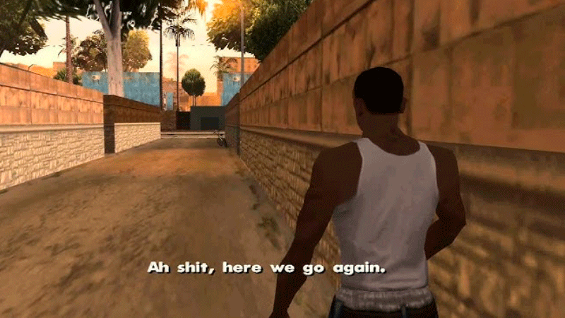

GTA - San Andreas | Dicas e truques
História

Inicio do jogo
Depois de viver em Liberty City por cinco anos, Carl Johnson ("CJ") retorna a Los Santos em 1992 para o enterro de sua mãe. Lá, encontra tanto sua família quanto sua antiga gangue, a Grove Street Families, aos pedaços. Ao mesmo tempo que começa a acertar questões antigas com seus companheiros de gangue e luta contra as gangues rivais pelo controle de territórios dentro da cidade, Carl começa a trazer a Grove Street Families de volta ao topo. No entanto, às vésperas das Famílias conseguirem o controle de Los Santos, CJ descobre que seus melhores amigos, Big Smoke e Ryder estão trabalhando em conjunto com o oficial de polícia corrupto, Frank Tenpenny, líder da C.R.A.S.H. (Dublado por Samuel L. Jackson) para uma das gangues rivais, os Ballas. Smoke e Ryder montam uma cilada, para que a polícia prenda o irmão de Carl, Sweet. Tenpenny manda então a polícia prender Sweet e raptar Carl, que é deixado num lugar muito distante, numa área rural bem ao sul de San Andreas, Angel Pine. Ao perceber que Tenpenny é sua única esperança de ficar fora da cadeia e conseguir a liberação de Sweet, Carl se vê obrigado a cumprir as ordens do policial corrupto, que incluem matar e interferir com pessoas envolvidas num processo criminal contra o próprio Tenpenny.
Carl envolve com Catalina, prima de Cesar Vialpando, ela namora por aventura, ou seja, gosta de se arriscar assaltando bancos ou lojas, mas depois o larga para ficar com Claude.
Carl rapidamente conquista a amizade de novos aliados, entre eles Wu Zi Mu, tambem conhecido como Woozie, líder da San Fierro Triads, The Truth e Cesar Vialpando, que como CJ, foi traído por seus antigos companheiros. Carl e seus novos amigos abrem uma garagem em San Fierro, enquanto esperam por uma oportunidade de retornar para Los Santos. Se envolvem com Jizzy B., dono de uma boate: A cúpula do prazer, e as drogas. Após descobrirem que Jizzy estava se envolvendo com Big Smoke, Carl o mata. Carl descobre aonde encontrar Ryder e T-Bone Mendez, capanga de Jizzy, ele os mata no Pier 69.
Carl se envolve com os assuntos de um agente governamental misterioso, Mike Toreno, que deixa a entender que libertará Sweet se Carl o ajudar com suas operações secretas. Paralelamente, Carl ajuda Wu Zi Mu a promover o crescimento de um novo cassino em Las Venturas dominada pelos mafiosos. Eventualmente Carl encontra riqueza e eventualmente retorna a Los Santos. Toreno cumpre sua promessa de libertar Sweet, porém este, para a surpresa do irmão, se recusa a fazer parte do novo estilo de vida milionário de CJ, e insiste em retornar para seu território natal e fazer as GSF renascerem, do que sentar-se confortavelmente sobre os louros de Carl.
Tenpenny vai a julgamento por diversos crimes, porém as acusações são arquivadas por falta de provas, já que todas as testemunhas da promotoria estão desaparecidas ou mortas. A libertação de Tenpenny provoca uma revolta entre os cidadãos de Los Santos. Impulsionado pela determinação de Sweet em derrubar o império de Big Smoke, que se tornou o maior traficante da cidade, Carl reconquista o território da gangue e caça os traidores responsáveis pelas tragédias que se abateram sobre as Famílias. Carl eventualmente executa Big Smoke num tiroteio final, escapando de seu palácio em chamas enquanto persegue Tenpenny, que fugira com toda a fortuna de Smoke. Após uma perseguição pelas ruas de Los Santos, Tenpenny perde controle do caminhão de bombeiros que dirigia e cai de uma ponte. Carl, prestes a executá-lo, é impedido por seu irmão. Ambos se afastam, e deixam Tenpenny "morrer num acidente de carro". As cenas finais mostram a confraternização entre a família e os aliados, enquanto Carl se afasta, dizendo que vai "ver o que está acontecendo no quarteirão".
Coletáveis
Localização das ferraduras

Você ganhará armas que serão entregues no Four Dragons Casino (SMG, M4, Escopeta de Combate e Bomba Adesiva)
E 105 Mil Dólares.
Localização dos grafites
Sua recompensa por completar todas as pichações são:
Membros da Groove Street Families equipados com Facas, Desert Eagle's e SMG's.
Armamento disponível para coleta na casa do CJ. (Tec-9, AK-47, Escopeta de Cano Serrado e Coquetel Molotov)
E mais Respeito para o Carl.
Localização das fotos
Sua recompensa, será dinheiro, e armas, que serão entregues na garagem de San Fierro.
(Micro SMG, Escopeta, Sniper e Granadas)
E 105 Mil dólares (Fora os 5 Mil que você recebe tirando todas as fotos, pois por cada foto você ganha 100 dólares, então 100x50=5000).
Localização das ostras

A sua recompensa por coletar as ostras, são $105.000, aumento do Sex Appel e e uma coisa interessante:
as namoradas de CJ nunca irão largar ele, nem mesmo quando ele deixar elas de lado.
Pontos de saltos unicos

Ao contrário de outros colecionáveis do jogo, eles não vão dar recompensas para completar todos eles, apenas dar-nos $500 por cada salto feito (Se formos bem sucedidos), dando-nos um total de $35,000, mais recompensas para características das acrobacias que fazemos (Distância, altura, rotação, etc.). Curiosamente, eles dão melhor recompensa do que pintar os 100 grafites, com o qual ganhamos apenas respeito.
Mapa real da cidade de San Andreas
×
VOCÊ ACHOU UM EASTER EGG!

Tente usar o código!